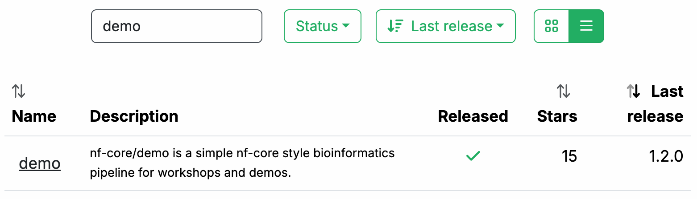
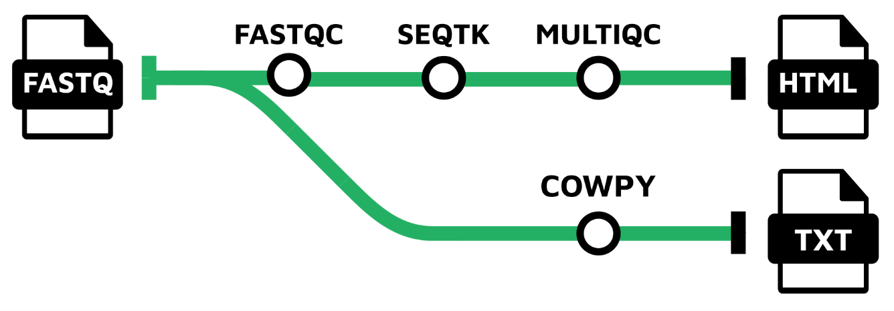
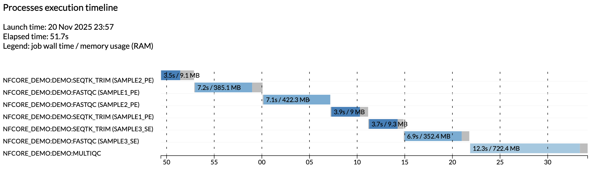

Parte 1: Ejecutar un pipeline de demostración¶
Traducción asistida por IA - más información y sugerencias
En esta primera parte del curso de entrenamiento Hello nf-core, le mostramos cómo encontrar y probar un pipeline de nf-core, entender cómo está organizado el código y reconocer en qué se diferencia del código Nextflow básico como se muestra en Hello Nextflow.
Vamos a utilizar un pipeline llamado nf-core/demo que es mantenido por el proyecto nf-core como parte de su inventario de pipelines para demostrar la estructura del código y las operaciones de las herramientas.
Asegúrese de que su directorio de trabajo esté configurado en hello-nf-core/ como se indica en la página Primeros pasos.
1. Encontrar y obtener el pipeline nf-core/demo¶
Comencemos localizando el pipeline nf-core/demo en el sitio web del proyecto en nf-co.re, que centraliza toda la información como: documentación general y artículos de ayuda, documentación para cada uno de los pipelines, publicaciones de blog, anuncios de eventos, etcétera.
1.1. Encontrar el pipeline en el sitio web¶
En su navegador web, vaya a https://nf-co.re/pipelines/ y escriba demo en la barra de búsqueda.

Haga clic en el nombre del pipeline, demo, para acceder a la página de documentación del pipeline.
Cada pipeline publicado tiene una página dedicada que incluye las siguientes secciones de documentación:
- Introduction: Una introducción y descripción general del pipeline
- Usage: Descripciones de cómo ejecutar el pipeline
- Parameters: Parámetros del pipeline agrupados con descripciones
- Output: Descripciones y ejemplos de los archivos de salida esperados
- Results: Archivos de salida de ejemplo generados a partir del conjunto de datos de prueba completo
- Releases & Statistics: Historial de versiones del pipeline y estadísticas
Siempre que esté considerando adoptar un nuevo pipeline, debe leer cuidadosamente la documentación del pipeline primero para entender qué hace y cómo debe configurarse antes de intentar ejecutarlo.
Eche un vistazo ahora y vea si puede averiguar:
- Qué herramientas ejecutará el pipeline (Consulte la pestaña:
Introduction) - Qué entradas y parámetros acepta o requiere el pipeline (Consulte la pestaña:
Parameters) - Cuáles son las salidas producidas por el pipeline (Consulte la pestaña:
Output)
1.1.1. Descripción general del pipeline¶
La pestaña Introduction proporciona una descripción general del pipeline, incluyendo una representación visual (llamada mapa de metro) y una lista de herramientas que se ejecutan como parte del pipeline.

- Read QC (FASTQC)
- Adapter and quality trimming (SEQTK_TRIM)
- Present QC for raw reads (MULTIQC)
1.1.2. Ejemplo de línea de comando¶
La documentación también proporciona un archivo de entrada de ejemplo (discutido más adelante) y un ejemplo de línea de comando.
nextflow run nf-core/demo \
-profile <docker/singularity/.../institute> \
--input samplesheet.csv \
--outdir <OUTDIR>
Notará que el comando de ejemplo NO especifica un archivo de workflow, solo la referencia al repositorio del pipeline, nf-core/demo.
Cuando se invoca de esta manera, Nextflow asumirá que el código está organizado de cierta manera. Obtengamos el código para que podamos examinar esta estructura.
1.2. Obtener el código del pipeline¶
Una vez que hemos determinado que el pipeline parece ser adecuado para nuestros propósitos, probémoslo. Afortunadamente, Nextflow facilita la obtención de pipelines desde repositorios correctamente formateados sin tener que descargar nada manualmente.
Volvamos a la terminal y ejecutemos lo siguiente:
Salida del comando
Nextflow hace un pull del código del pipeline, lo que significa que descarga el repositorio completo en su unidad local.
Para ser claros, puede hacer esto con cualquier pipeline de Nextflow que esté configurado apropiadamente en GitHub, no solo con pipelines de nf-core. Sin embargo, nf-core es la colección de código abierto más grande de pipelines de Nextflow.
Puede hacer que Nextflow le proporcione una lista de qué pipelines ha obtenido de esta manera:
Notará que los archivos no están en su directorio de trabajo actual.
Por defecto, Nextflow los guarda en $NXF_HOME/assets.
Nota
La ruta completa puede diferir en su sistema si no está utilizando nuestro entorno de entrenamiento.
Nextflow mantiene el código fuente descargado intencionalmente 'fuera del camino' bajo el principio de que estos pipelines deben usarse más como bibliotecas que como código con el que interactuaría directamente.
Sin embargo, para los propósitos de este entrenamiento, queremos poder explorar y ver qué hay allí. Entonces, para facilitar eso, creemos un enlace simbólico a esa ubicación desde nuestro directorio de trabajo actual.
Esto crea un acceso directo que facilita explorar el código que acabamos de descargar.
Ahora podemos explorar más fácilmente el código fuente según sea necesario.
Pero primero, ¡probemos ejecutar nuestro primer pipeline de nf-core!
Conclusión¶
Ahora sabe cómo encontrar un pipeline a través del sitio web de nf-core y obtener una copia local del código fuente.
¿Qué sigue?¶
Aprenda cómo probar un pipeline de nf-core con mínimo esfuerzo.
2. Probar el pipeline con su perfil de prueba¶
Convenientemente, cada pipeline de nf-core viene con un perfil de prueba. Este es un conjunto mínimo de configuraciones para que el pipeline se ejecute usando un conjunto de datos de prueba pequeño alojado en el repositorio nf-core/test-datasets. Es una excelente manera de probar rápidamente un pipeline a pequeña escala.
Nota
El sistema de perfiles de configuración de Nextflow le permite cambiar fácilmente entre diferentes motores de contenedores o entornos de ejecución. Para más detalles, consulte Hello Nextflow Parte 6: Configuración.
2.1. Examinar el perfil de prueba¶
Es una buena práctica verificar qué especifica el perfil de prueba de un pipeline antes de ejecutarlo.
El perfil test para nf-core/demo se encuentra en el archivo de configuración conf/test.config y se muestra a continuación.
Notará de inmediato que el bloque de comentarios en la parte superior incluye un ejemplo de uso que muestra cómo ejecutar el pipeline con este perfil de prueba.
| conf/test.config | |
|---|---|
Las únicas cosas que necesitamos proporcionar son lo que se muestra entre corchetes angulares en el comando de ejemplo: <docker/singularity> y <OUTDIR>.
Como recordatorio, <docker/singularity> se refiere a la elección del sistema de contenedores. Todos los pipelines de nf-core están diseñados para ser utilizables con contenedores (Docker, Singularity, etc.) para garantizar la reproducibilidad y eliminar problemas de instalación de software.
Entonces necesitaremos especificar si queremos usar Docker o Singularity para probar el pipeline.
La parte --outdir <OUTDIR> se refiere al directorio donde Nextflow escribirá las salidas del pipeline.
Necesitamos proporcionar un nombre para él, que simplemente podemos inventar.
Si aún no existe, Nextflow lo creará por nosotros en tiempo de ejecución.
Pasando a la sección después del bloque de comentarios, el perfil de prueba nos muestra qué ha sido preconfigurado para las pruebas: más notablemente, el parámetro input ya está configurado para apuntar a un conjunto de datos de prueba, por lo que no necesitamos proporcionar nuestros propios datos.
Si sigue el enlace a la entrada preconfigurada, verá que es un archivo csv que contiene identificadores de muestra y rutas de archivo para varias muestras experimentales.
sample,fastq_1,fastq_2
SAMPLE1_PE,https://raw.githubusercontent.com/nf-core/test-datasets/viralrecon/illumina/amplicon/sample1_R1.fastq.gz,https://raw.githubusercontent.com/nf-core/test-datasets/viralrecon/illumina/amplicon/sample1_R2.fastq.gz
SAMPLE2_PE,https://raw.githubusercontent.com/nf-core/test-datasets/viralrecon/illumina/amplicon/sample2_R1.fastq.gz,https://raw.githubusercontent.com/nf-core/test-datasets/viralrecon/illumina/amplicon/sample2_R2.fastq.gz
SAMPLE3_SE,https://raw.githubusercontent.com/nf-core/test-datasets/viralrecon/illumina/amplicon/sample1_R1.fastq.gz,
SAMPLE3_SE,https://raw.githubusercontent.com/nf-core/test-datasets/viralrecon/illumina/amplicon/sample2_R1.fastq.gz,
Esto se llama una hoja de muestras, y es la forma más común de entrada a los pipelines de nf-core.
Nota
No se preocupe si no está familiarizado con los formatos y tipos de datos, no es importante para lo que sigue.
Entonces esto confirma que tenemos todo lo que necesitamos para probar el pipeline.
2.2. Ejecutar el pipeline¶
Decidamos usar Docker para el sistema de contenedores y demo-results como el directorio de salida, y estamos listos para ejecutar el comando de prueba:
Salida del comando
N E X T F L O W ~ version 25.04.3
Launching `https://github.com/nf-core/demo` [magical_pauling] DSL2 - revision: db7f526ce1 [master]
------------------------------------------------------
,--./,-.
___ __ __ __ ___ /,-._.--~'
|\ | |__ __ / ` / \ |__) |__ } {
| \| | \__, \__/ | \ |___ \`-._,-`-,
`._,._,'
nf-core/demo 1.0.2
------------------------------------------------------
Input/output options
input : https://raw.githubusercontent.com/nf-core/test-datasets/viralrecon/samplesheet/samplesheet_test_illumina_amplicon.csv
outdir : demo-results
Institutional config options
config_profile_name : Test profile
config_profile_description: Minimal test dataset to check pipeline function
Generic options
trace_report_suffix : 2025-11-21_04-57-41
Core Nextflow options
revision : master
runName : magical_pauling
containerEngine : docker
launchDir : /workspaces/training/hello-nf-core
workDir : /workspaces/training/hello-nf-core/work
projectDir : /workspaces/.nextflow/assets/nf-core/demo
userName : root
profile : docker,test
configFiles : /workspaces/.nextflow/assets/nf-core/demo/nextflow.config
!! Only displaying parameters that differ from the pipeline defaults !!
------------------------------------------------------
* The pipeline
https://doi.org/10.5281/zenodo.12192442
* The nf-core framework
https://doi.org/10.1038/s41587-020-0439-x
* Software dependencies
https://github.com/nf-core/demo/blob/master/CITATIONS.md
executor > local (7)
[ff/a6976b] NFCORE_DEMO:DEMO:FASTQC (SAMPLE3_SE) | 3 of 3 ✔
[39/731ab7] NFCORE_DEMO:DEMO:SEQTK_TRIM (SAMPLE3_SE) | 3 of 3 ✔
[7c/78d96e] NFCORE_DEMO:DEMO:MULTIQC | 1 of 1 ✔
-[nf-core/demo] Pipeline completed successfully-
Si su salida coincide con esa, ¡felicitaciones! Acaba de ejecutar su primer pipeline de nf-core.
Notará que hay mucha más salida en la consola que cuando ejecuta un pipeline básico de Nextflow. Hay un encabezado que incluye un resumen de la versión del pipeline, entradas y salidas, y algunos elementos de configuración.
Nota
Su salida mostrará diferentes marcas de tiempo, nombres de ejecución y rutas de archivo, pero la estructura general y la ejecución del proceso deben ser similares.
Pasando a la salida de ejecución, echemos un vistazo a las líneas que nos dicen qué procesos se ejecutaron:
[ff/a6976b] NFCORE_DEMO:DEMO:FASTQC (SAMPLE3_SE) | 3 of 3 ✔
[39/731ab7] NFCORE_DEMO:DEMO:SEQTK_TRIM (SAMPLE3_SE) | 3 of 3 ✔
[7c/78d96e] NFCORE_DEMO:DEMO:MULTIQC | 1 of 1 ✔
Esto nos dice que se ejecutaron tres procesos, correspondientes a las tres herramientas mostradas en la página de documentación del pipeline en el sitio web de nf-core: FASTQC, SEQTK_TRIM y MULTIQC.
Los nombres completos de los procesos como se muestran aquí, como NFCORE_DEMO:DEMO:MULTIQC, son más largos que lo que puede haber visto en el material introductorio de Hello Nextflow.
Estos incluyen los nombres de sus workflows padre y reflejan la modularidad del código del pipeline.
Entraremos en más detalle sobre eso en un momento.
2.3. Examinar las salidas del pipeline¶
Finalmente, echemos un vistazo al directorio demo-results producido por el pipeline.
Contenido del directorio
demo-results
├── fastqc
│ ├── SAMPLE1_PE
│ ├── SAMPLE2_PE
│ └── SAMPLE3_SE
├── fq
│ ├── SAMPLE1_PE
│ ├── SAMPLE2_PE
│ └── SAMPLE3_SE
├── multiqc
│ ├── multiqc_data
│ ├── multiqc_plots
│ └── multiqc_report.html
└── pipeline_info
├── execution_report_2025-11-21_04-57-41.html
├── execution_timeline_2025-11-21_04-57-41.html
├── execution_trace_2025-11-21_04-57-41.txt
├── nf_core_demo_software_mqc_versions.yml
├── params_2025-11-21_04-57-46.json
└── pipeline_dag_2025-11-21_04-57-41.html
Eso puede parecer mucho.
Para obtener más información sobre las salidas del pipeline nf-core/demo, consulte su página de documentación.
En esta etapa, lo importante a observar es que los resultados están organizados por módulo, y además hay un directorio llamado pipeline_info que contiene varios informes con marcas de tiempo sobre la ejecución del pipeline.
Por ejemplo, el archivo execution_timeline_* le muestra qué procesos se ejecutaron, en qué orden y cuánto tiempo tardaron en ejecutarse:

Nota
Aquí las tareas no se ejecutaron en paralelo porque estamos ejecutando en una máquina minimalista en Github Codespaces. Para ver que se ejecuten en paralelo, intente aumentar la asignación de CPU de su codespace y los límites de recursos en la configuración de prueba.
Estos informes se generan automáticamente para todos los pipelines de nf-core.
Conclusión¶
Sabe cómo ejecutar un pipeline de nf-core usando su perfil de prueba integrado y dónde encontrar sus salidas.
¿Qué sigue?¶
Aprenda cómo está organizado el código del pipeline.
3. Examinar la estructura del código del pipeline¶
Ahora que hemos ejecutado con éxito el pipeline como usuarios, cambiemos nuestra perspectiva para ver cómo están estructurados internamente los pipelines de nf-core.
El proyecto nf-core aplica directrices estrictas sobre cómo se estructuran los pipelines, y sobre cómo se organiza, configura y documenta el código. Entender cómo está todo organizado es el primer paso hacia el desarrollo de sus propios pipelines compatibles con nf-core, lo cual abordaremos en la Parte 2 de este curso.
Echemos un vistazo a cómo está organizado el código del pipeline en el repositorio nf-core/demo, usando el enlace simbólico pipelines que creamos anteriormente.
Puede usar tree o usar el explorador de archivos para encontrar y abrir el directorio nf-core/demo.
Contenido del directorio
pipelines/nf-core/demo
├── assets
├── CHANGELOG.md
├── CITATIONS.md
├── CODE_OF_CONDUCT.md
├── conf
├── docs
├── LICENSE
├── main.nf
├── modules
├── modules.json
├── nextflow.config
├── nextflow_schema.json
├── nf-test.config
├── README.md
├── ro-crate-metadata.json
├── subworkflows
├── tests
├── tower.yml
└── workflows
Hay mucho sucediendo allí, así que abordaremos esto paso a paso.
Primero, notemos que en el nivel superior, puede encontrar un archivo README con información resumida, así como archivos accesorios que resumen información del proyecto como licencia, directrices de contribución, citas y código de conducta.
La documentación detallada del pipeline se encuentra en el directorio docs.
Todo este contenido se utiliza para generar las páginas web en el sitio web de nf-core programáticamente, por lo que siempre están actualizadas con el código.
Ahora, para el resto, vamos a dividir nuestra exploración en tres etapas:
- Componentes del código del pipeline (
main.nf,workflows,subworkflows,modules) - Configuración del pipeline
- Entradas y validación
Comencemos con los componentes del código del pipeline. Nos vamos a enfocar en la jerarquía de archivos y la organización estructural, en lugar de profundizar en el código dentro de archivos individuales.
3.1. Componentes del código del pipeline¶
La organización estándar del código de pipeline de nf-core sigue una estructura modular que está diseñada para maximizar la reutilización de código, como se presentó en Hello Modules, Parte 4 del curso Hello Nextflow, aunque al verdadero estilo de nf-core, esto se implementa con un poco de complejidad adicional. Específicamente, los pipelines de nf-core hacen uso abundante de subworkflows, es decir, scripts de workflow que son importados por un workflow padre.
Eso puede sonar un poco abstracto, así que echemos un vistazo a cómo se usa esto en la práctica en el pipeline nf-core/demo.
Nota
No revisaremos el código real de cómo estos componentes modulares están conectados, porque hay cierta complejidad adicional asociada con el uso de subworkflows que puede ser confusa, y entender eso no es necesario en esta etapa del entrenamiento. Por ahora, nos vamos a enfocar en la organización general y la lógica.
3.1.1. Descripción general¶
Así es como se ven las relaciones entre los componentes de código relevantes para el pipeline nf-core/demo:
Hay un script llamado punto de entrada llamado main.nf, que actúa como un contenedor para dos tipos de workflows anidados: el workflow que contiene la lógica de análisis real, ubicado en workflows/ y llamado demo.nf, y un conjunto de workflows de mantenimiento ubicados en subworkflows/.
El workflow demo.nf llama a módulos ubicados en modules/; estos contienen los procesos que realizarán los pasos de análisis reales.
Nota
Los subworkflows no se limitan a funciones de mantenimiento, y pueden hacer uso de módulos de procesos.
El pipeline nf-core/demo mostrado aquí resulta estar en el lado más simple del espectro, pero otros pipelines de nf-core (como nf-core/rnaseq) utilizan subworkflows que están involucrados en el análisis real.
Ahora, revisemos estos componentes por turno.
3.1.2. El script de punto de entrada: main.nf¶
El script main.nf es el punto de entrada desde donde Nextflow comienza cuando ejecutamos nextflow run nf-core/demo.
Eso significa que cuando ejecuta nextflow run nf-core/demo para ejecutar el pipeline, Nextflow encuentra y ejecuta automáticamente el script main.nf.
Esto funciona para cualquier pipeline de Nextflow que siga esta nomenclatura y estructura convencionales, no solo para pipelines de nf-core.
Usar un script de punto de entrada facilita ejecutar subworkflows de 'mantenimiento' estandarizados antes y después de que se ejecute el script de análisis real. Revisaremos esos después de haber revisado el workflow de análisis real y sus módulos.
3.1.3. El script de análisis: workflows/demo.nf¶
El workflow workflows/demo.nf es donde se almacena la lógica central del pipeline.
Está estructurado de manera muy similar a un workflow normal de Nextflow, excepto que está diseñado para ser llamado desde un workflow padre, lo cual requiere algunas características adicionales.
Cubriremos las diferencias relevantes en la siguiente parte de este curso, cuando abordemos la conversión del pipeline simple Hello de Hello Nextflow en una forma compatible con nf-core.
El workflow demo.nf llama a módulos ubicados en modules/, que revisaremos a continuación.
Nota
Algunos workflows de análisis de nf-core muestran niveles adicionales de anidamiento al llamar a subworkflows de nivel inferior. Esto se usa principalmente para envolver dos o más módulos que se usan comúnmente juntos en segmentos de pipeline fácilmente reutilizables. Puede ver algunos ejemplos navegando por los subworkflows de nf-core disponibles en el sitio web de nf-core.
Cuando el script de análisis usa subworkflows, estos se almacenan en el directorio subworkflows/.
3.1.4. Los módulos¶
Los módulos son donde vive el código del proceso, como se describe en la Parte 4 del curso de entrenamiento Hello Nextflow.
En el proyecto nf-core, los módulos se organizan usando una estructura anidada multinivel que refleja tanto su origen como su contenido.
En el nivel superior, los módulos se diferencian como nf-core o local (no parte del proyecto nf-core), y luego se colocan en un directorio nombrado según la(s) herramienta(s) que envuelven.
Si la herramienta pertenece a un toolkit (es decir, un paquete que contiene múltiples herramientas) entonces hay un nivel de directorio intermedio nombrado según el toolkit.
Puede ver esto aplicado en la práctica a los módulos del pipeline nf-core/demo:
Contenido del directorio
Aquí ve que los módulos fastqc y multiqc se encuentran en el nivel superior dentro de los módulos nf-core, mientras que el módulo trim se encuentra bajo el toolkit al que pertenece, seqtk.
En este caso no hay módulos local.
El archivo de código del módulo que describe el proceso siempre se llama main.nf, y está acompañado de pruebas y archivos .yml que ignoraremos por ahora.
En conjunto, el workflow de punto de entrada, el workflow de análisis y los módulos son suficientes para ejecutar las partes 'interesantes' del pipeline. Sin embargo, sabemos que también hay subworkflows de mantenimiento allí, así que veamos esos ahora.
3.1.5. Los subworkflows de mantenimiento¶
Al igual que los módulos, los subworkflows se diferencian en directorios local y nf-core, y cada subworkflow tiene su propia estructura de directorio anidada con su propio script main.nf, pruebas y archivo .yml.
Contenido del directorio
pipelines/nf-core/demo/subworkflows
├── local
│ └── utils_nfcore_demo_pipeline
│ └── main.nf
└── nf-core
├── utils_nextflow_pipeline
│ ├── main.nf
│ ├── meta.yml
│ └── tests
├── utils_nfcore_pipeline
│ ├── main.nf
│ ├── meta.yml
│ └── tests
└── utils_nfschema_plugin
├── main.nf
├── meta.yml
└── tests
9 directories, 7 files
Como se señaló anteriormente, el pipeline nf-core/demo no incluye ningún subworkflow específico de análisis, por lo que todos los subworkflows que vemos aquí son los llamados workflows de 'mantenimiento' o 'utilidad', como se denota por el prefijo utils_ en sus nombres.
Estos subworkflows son los que producen el elegante encabezado de nf-core en la salida de la consola, entre otras funciones accesorias.
Consejo
Aparte de su patrón de nomenclatura, otra indicación de que estos subworkflows no realizan ninguna función verdaderamente relacionada con el análisis es que no llaman a ningún proceso en absoluto.
Esto completa el resumen de los componentes de código principales que constituyen el pipeline nf-core/demo.
Ahora echemos un vistazo a los elementos restantes sobre los que debe saber un poco antes de sumergirse en el desarrollo: configuración del pipeline y validación de entrada.
3.2. Configuración del pipeline¶
Ha aprendido anteriormente que Nextflow ofrece muchas opciones para configurar la ejecución del pipeline, ya sea en términos de entradas y parámetros, recursos de computación y otros aspectos de la orquestación. El proyecto nf-core aplica directrices altamente estandarizadas para la configuración del pipeline que tienen como objetivo basarse en las opciones de personalización flexibles de Nextflow de una manera que proporcione mayor consistencia y mantenibilidad entre pipelines.
El archivo de configuración central nextflow.config se utiliza para establecer valores predeterminados para parámetros y otras opciones de configuración.
La mayoría de estas opciones de configuración se aplican por defecto, mientras que otras (por ejemplo, perfiles de dependencias de software) se incluyen como perfiles opcionales.
Hay varios archivos de configuración adicionales que se almacenan en la carpeta conf y que pueden agregarse a la configuración por defecto u opcionalmente como perfiles:
base.config: Un archivo de configuración 'en blanco', apropiado para uso general en la mayoría de los entornos de computación de alto rendimiento. Esto define amplios contenedores de uso de recursos, por ejemplo, que son convenientes de aplicar a los módulos.modules.config: Directivas y argumentos adicionales de módulos.test.config: Un perfil para ejecutar el pipeline con datos de prueba mínimos, que usamos cuando ejecutamos el pipeline de demostración.test_full.config: Un perfil para ejecutar el pipeline con un conjunto de datos de prueba de tamaño completo.
Tocaremos algunos de esos archivos más adelante en el curso.
3.3. Entradas y validación¶
Como notamos anteriormente, cuando examinamos el perfil de prueba del pipeline nf-core/demo, está diseñado para tomar como entrada una hoja de muestras que contiene rutas de archivo e identificadores de muestra.
Las rutas de archivo vinculadas a datos reales ubicados en el repositorio nf-core/test-datasets.
También se proporciona una hoja de muestras de ejemplo en el directorio assets, aunque las rutas en esta no son reales.
| assets/samplesheet.csv | |
|---|---|
Esta hoja de muestras en particular es bastante simple, pero algunos pipelines se ejecutan en hojas de muestras que son más complejas, con muchos más metadatos asociados con las entradas primarias.
Desafortunadamente, debido a que estos archivos pueden ser difíciles de verificar a simple vista, el formato inadecuado de los datos de entrada es una fuente muy común de fallas del pipeline. Un problema relacionado es cuando los parámetros se proporcionan incorrectamente.
La solución a estos problemas es ejecutar verificaciones de validación automatizadas en todos los archivos de entrada para asegurar que contengan los tipos esperados de información, formateados correctamente, y en parámetros para asegurar que sean del tipo esperado. Esto se llama validación de entrada, y idealmente debería hacerse antes de intentar ejecutar un pipeline, en lugar de esperar a que el pipeline falle para descubrir que hubo un problema con las entradas.
Al igual que con la configuración, el proyecto nf-core tiene opiniones muy firmes sobre la validación de entrada, y recomienda el uso del plugin nf-schema, un plugin de Nextflow que proporciona capacidades de validación integrales para pipelines de Nextflow.
Cubriremos este tema con más detalle en la Parte 5 de este curso.
Por ahora, solo tenga en cuenta que se proporcionan dos archivos JSON para ese propósito, nextflow_schema.json y assets/schema_input.json.
El nextflow_schema.json es un archivo utilizado para almacenar información sobre los parámetros del pipeline incluyendo tipo, descripción y texto de ayuda en un formato legible por máquina.
Esto se utiliza para varios propósitos, incluyendo validación automatizada de parámetros, generación de texto de ayuda y renderizado de formularios de parámetros interactivos en interfaces de usuario.
El schema_input.json es un archivo utilizado para definir la estructura de la hoja de muestras de entrada.
Cada columna puede tener un tipo, patrón, descripción y texto de ayuda en un formato legible por máquina.
El esquema se utiliza para varios propósitos, incluyendo validación automatizada y proporcionar mensajes de error útiles.
Conclusión¶
Sabe cuáles son los componentes principales de un pipeline de nf-core y cómo está organizado el código; dónde están ubicados los elementos principales de configuración; y es consciente de para qué sirve la validación de entrada.
¿Qué sigue?¶
¡Tome un descanso! Eso fue mucho. Cuando se sienta renovado y listo, pase a la siguiente sección para aplicar lo que ha aprendido para escribir un pipeline compatible con nf-core.
Consejo
Si desea aprender cómo componer workflows con subworkflows antes de pasar a la siguiente parte, consulte la Misión Secundaria Workflows de Workflows.